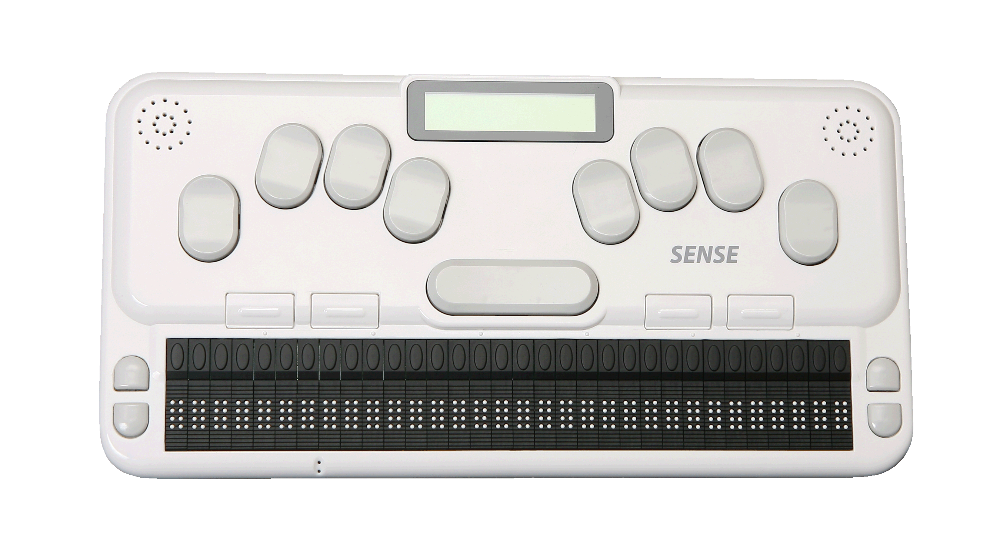

Blindhet & Internet
Hur skiljer sig en synskadads internetupplevelse från vår?

Översikt
- Seende vs icke-seende internetanvändning
- Verktyg
- Datortillbehör
- Mjukvara
- Programmering med synskadade i åtanke
- Mobilsurf
- Framtiden
Webben när du inte kan se

Varför internet?
Hur?
Verktyg

Tangentbord med punktskrift
- märke 1
- märke 2
- märke 3
Skärmläsare
- JAWS, 49.1%
- Window Eyes, 12.3%
- NVDA, 13.7%
Punktskrifts-läsare
Styrkor
- Noggran
- Kan mata in data som ett tangentbord
Svagheter
- Långsam
- Punktskrif är ett krav
Skärmläsare

Hur fungerar dem?
Fördelar jämfört med punktskriftsläsare
- Snabbare
- Anpassningsbar
- Finns ofta med i datorns operativsystem (Apple, Windows)
Vårt ansvar som programmerare
Regler och bestämmelser http://www.w3.org/TR/WCAG20/
Tabeller
alt-taggar
Bilder som rubriker
Menyer/Överskrifter
Zoom
Språk
Störst men inte alltid bäst?

Mobilsurf
Skärmläsare (71.8%)
- VoiceOver (iOS) - 48.7% (Gratis)
- Nuance Talks (Symbian) - 17.9%
- Mobile Speak (Symbian and Windows Mobile) - 8.5%
- TalkBack (Android) - 5.4% (Gratis)
- Mobile Accessibility (Android) 3.8%
Tangentbord
iOS8
Appar

Ariadne GPS

LookTel Money Reader

Color ID Free

Light Detector

VM Alert - Video Motion Detector

Hey Tell

VizWiz
Sammanfattning
Vad efterfrågas
Snabbare navigering. Billigare hjälpmedel. Mer tillgänglig nyhetsuppdatering.
Forskning
IBM & Royal London Society for Blind People
Bluetooth-glasögon.
AbilityNet's BrainAble Projekt
Google Ventures Driverless Project
Blind Film Critic